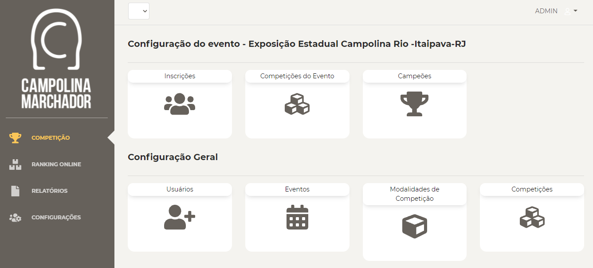

Sobre o sistema
|
<< Click to Display Table of Contents >> Navigation: »No topics above this level« Sobre o sistema |
Portal ajuda Campolina - Eventos e Ranking! Parceiro.
Tutorial Eventos e Ranking |
Atenção: o objetivo do sistema é fornecer em tempo real os resultados diários ou após conclusão do evento, apoiando as tomadas de informações dos promotores. Atenção as etapas de lançamento de notas e avaliação dentro do sistema. |
Tela inicial do sistema!
Ao abrir o sistema de eventos e ranking teremos uma tela onde você promotor irá visualizar os menus de trabalho, que são: Inscrições, Competições do Evento, Campeonatos.
Uso do promotor!
Inscrições - onde o promotor poderá verificar as inscrições cadastradas ou cadastrar novos participantes.
Competições do Evento - onde o promotor ou administrador poderá verificar os eventos e competições cadastradas ou criar nova competição.
Campeonatos - onde o promotor poderá verificar a posição dos novos vencedores nos devidos pódios.
Uso do administador do sistema!
Usuário - cadastro de novos utilizadores do sistema.
Eventos - cadastro e parametrização de novos eventos de competição, data de inicio, data de fim, ações e mais.
Modalidade de competição - cadastro de novas modalidades de competição, assim como parametrização e alterações das modalidades existentes.
Competições - cadastro de novas competições, parametrização e alterações das competições existentes.
